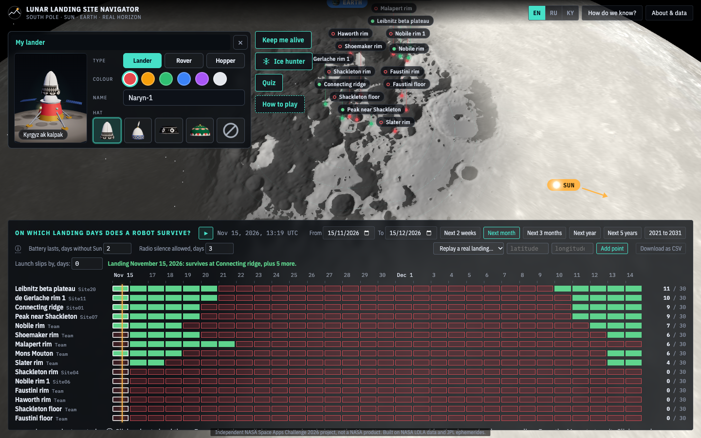

Lunar Landing Site Navigator is a free web app for students. Pick one of 15 sites near the Moon's south pole, or drop your own, and any day from 2021 to 2031. It shows whether a solar robot landing there is still alive after 14 days.
Team
404 agents, Naryn, Kyrgyzstan
Members
Manuchehr, Aruzhan, Kairat, Arsen, Amirbek
Challenge
Lunar Landing Site Navigator, NASA Space Apps Challenge 2026
NASA data
Built on LRO LOLA terrain; tested against JPL Horizons and Goddard illumination maps
Slides 2 to 7 are short animations. Each one starts when you open it and repeats, so nothing is missed. Our four landers explain. Reading the PDF? You see the last frame of each: the moving slides are at lunar-navigator-explained.web.app/deck.html

Naryn-1Kyrgyz ak kalpak
Samarkand-2Uzbek doppi
Khujand-3Tajik toqi
Almaty-4Kazakh kalpak
Name the team and the challenge. One sentence: we turn Sun and Earth positions into a yes or no for a solar mission that must last 14 days. Slide 1 is still; slides 2 to 7 each play a short drawn scene with our four landers, the same drawings as in the app's game Keep me alive. Every screenshot is of the live app, taken on 15 November 2026.
1 / 7Made with AI (SI) tools: Claude. Screenshots show our live app; the drawings are made with AI tools.
One hill can end a Moon mission
The problem in plain words: a solar robot needs sunlight for power and a view of Earth for radio. At the pole both sit on the horizon, so terrain decides. It is real: India put its Chandrayaan-3 lander to sleep on 4 September 2023, ahead of the lunar night. A launch that slips by a few days turns a good landing day into a lost one. Our three goals: one honest answer from NASA data (this site, this day: survive or not); a tool a student can play with, in Kyrgyz, Russian or English; nothing to install.
2 / 7Made with AI (SI) tools: Claude. Screenshots show our live app; the drawings are made with AI tools.
Replay any period: green days survive, red days don't
Click Next year live, then Next 5 years. Why Earth: from the pole Earth sits on the horizon and the Moon nods (libration), so Earth is up about two weeks and hidden about two weeks (13 to 17 days up at most sites, measured in the app). A 14 day stay with at most 3 days of silence fits only if it lands in the first days Earth is up. Why the Sun: the Moon's axis tilts 1.5 degrees, so for months the Sun stays so low that hills hide it for days. 354 days is 12 lunar months, the strongest repeat in the app's own verdicts for 9 of the 10 sites with any green day. For a Kyrgyz audience: the same reason Orozo (Ramadan) comes about 11 days earlier every year. Launch slip: type the days late in "Launch slips by" and one line answers.
3 / 7Made with AI (SI) tools: Claude. Screenshots show our live app; the drawings are made with AI tools.
Click a day. Stand there. Survived or lost?
Click a green day live, then Look at Sun and press play. "Sunset in" and "Earthset in" count down. Slope, slope within 2 km and distance from the pole are NASA Artemis III rules. Night (2 days), radio (3 days) and first sun (24 hours) are our teaching values; NASA says VIPER cannot endure more than 50 hours of darkness, so 2 days is in that range. A spot you pick yourself uses 320 m terrain, coarser than the 80 m of our fifteen sites. The table downloads as CSV and the page address keeps your sites and limits, so a comparison can be shared as a link.
4 / 7Made with AI (SI) tools: Claude. Screenshots show our live app; the drawings are made with AI tools.
Built on NASA data, tested against it
0.0047 degrees is about a hundredth of the Sun's width. Terrain is LOLA LDEM_80S_80M, horizon traced every 0.25 degrees out to 300 km. Positions also agree with an independent JPL DE440 series to under 0.01 degrees. Against NASA Goddard's maps at twenty points our Earth in view share differs by 3.3 points on average (r 0.97). Our Sun share is above NASA's map by 11.4 points on average over the twenty points, and by 21 at the best lit spots: read our Sun numbers as an upper estimate. Causes we have not separated: we stand 2 m above ground, our terrain is 80 m against their 60 m, and best spots were picked on our own terrain. Other replays in the app: IM-1 and Chang'e 6.
5 / 7Made with AI (SI) tools: Claude. Screenshots show our live app; the drawings are made with AI tools.
Build a lander and play three games, all on the same NASA data
My lander, Keep me alive and the quiz take every survived and lost from the same rule as the calendar; Ice hunter uses the same NASA terrain and Sun model but asks a different question (does the Sun ever reach this spot). Each has a browser test that compares what the student sees with the model. Hats: Kyrgyz ak kalpak, Kazakh kalpak, Uzbek doppi, Tajik toqi, drawn in code, no photos. Ice hunter does not detect ice: it says water ice "could" hide where our model never sees the Sun; NASA's LCROSS found water in the shadowed crater Cabeus in 2009. Keep me alive is a teaching rule, not a real power system. A first visit explains itself: a tour of five steps, and a "How to play" card on the first press of each game.
6 / 7Made with AI (SI) tools: Claude. Screenshots show our live app; the drawings are made with AI tools.
Free for every student, starting in Central Asia
The lessons are a plan: no lesson has been held yet. The Russian and Kyrgyz texts were drafted with AI and still need a check by native speakers. Free in the browser, no login, works on a phone, code under Apache-2.0. End on the app link and invite the jury to drop their own lander.
7 / 7Made with AI (SI) tools: Claude. Screenshots show our live app; the drawings are made with AI tools.